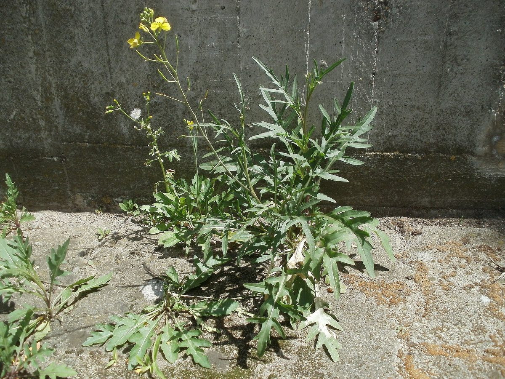
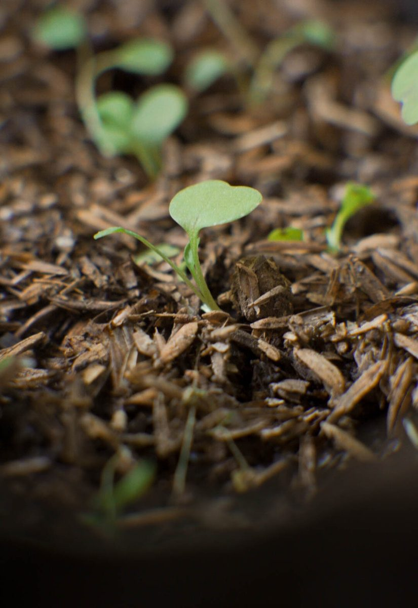
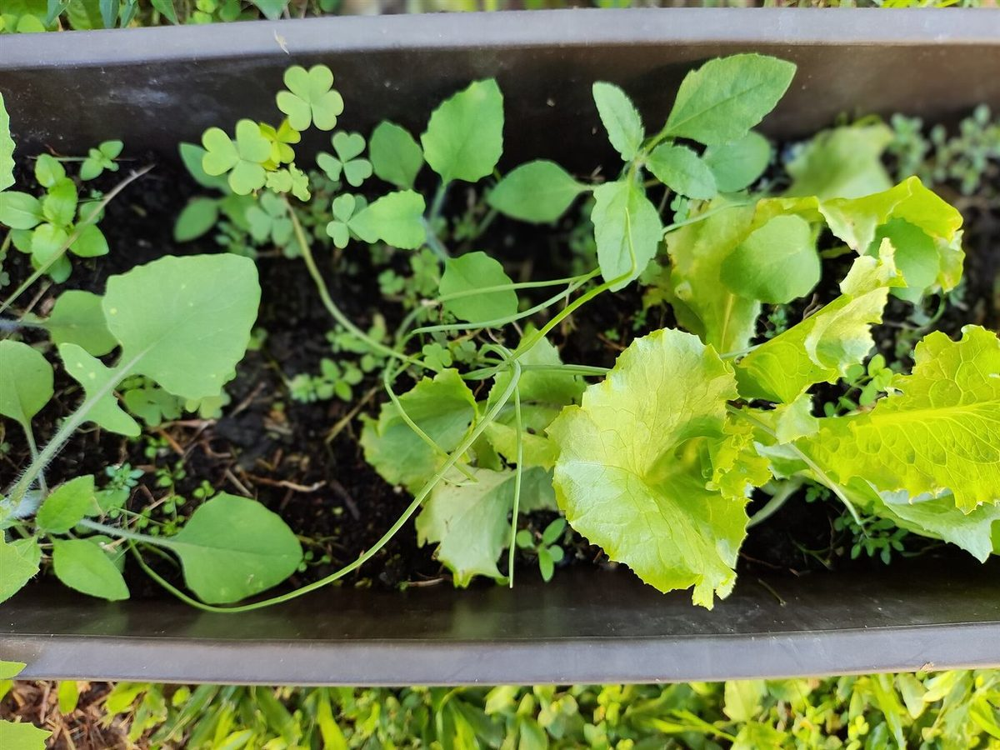
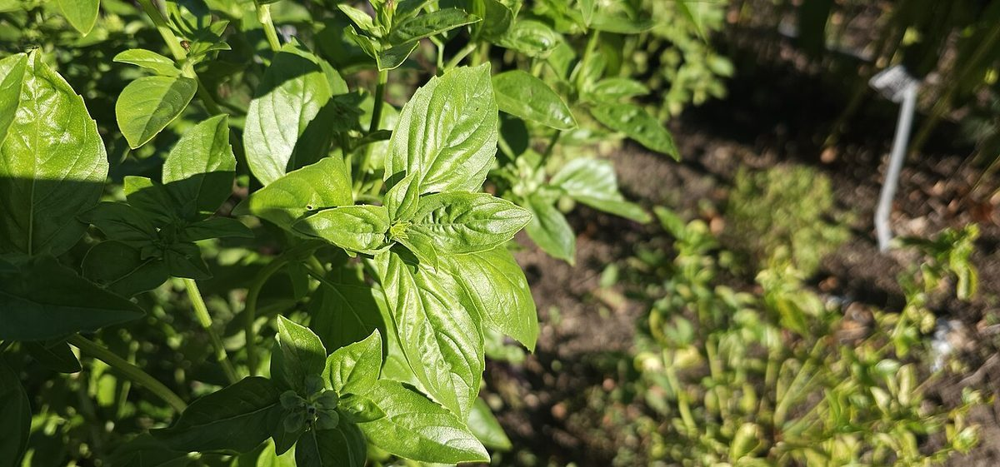
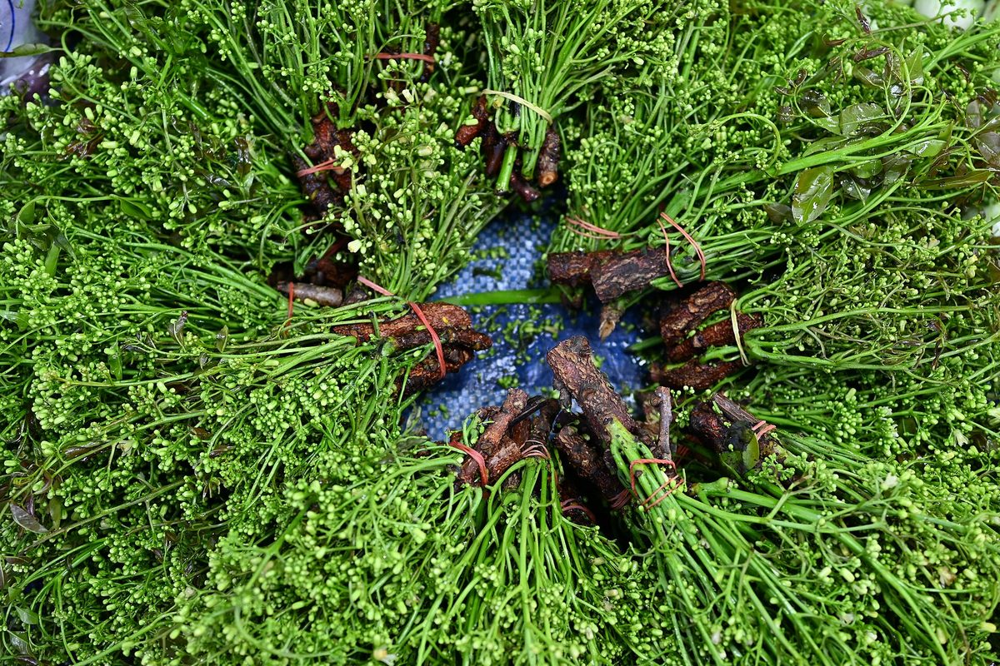

カフェ / 岡山県玉野市
Cafe Rucola19990
岡山県玉野市八浜町にあるカフェ「Cafe Rucola 1999」のご案内ページです。営業時間やメニューなど、詳しいことは準備中。まずはInstagramをのぞいてみてください。

制作側の連想
数字がひとつ、繰り上がる前。
制作側の連想です。お店の理念・由来とは無関係で、店名の由来も分かりません。「1999」という数字から、走行距離計(オドメーター)の「あと1で2000に繰り上がる」瞬間を連想し、このサイトの飾りにしています。
四つの桁
1・9・9・9を、四枚の葉で。
写真はお店や玉野市のものではなく、国外・撮影地不明のフリー素材です。桁ごとの意味づけも制作側の遊びです。
- 1

芽ばえ(国外のイメージ) - 9

鉢の葉もの(撮影地不明のイメージ) - 9

ハーブの葉(国外のイメージ) - 9

束ねた緑(国外のイメージ)
ご案内
確認できていること
| 所在地 | 〒706-0224 岡山県玉野市八浜町大崎１６４８−２ |
|---|---|
| 電話 | 0863-30-9722 |
| 営業時間 | 準備中 |
| 定休日 | 準備中 |
| ご予約 | 準備中 |
| 駐車場 | 準備中 |
| SNS | Instagram @cafe_rucola_1999 |